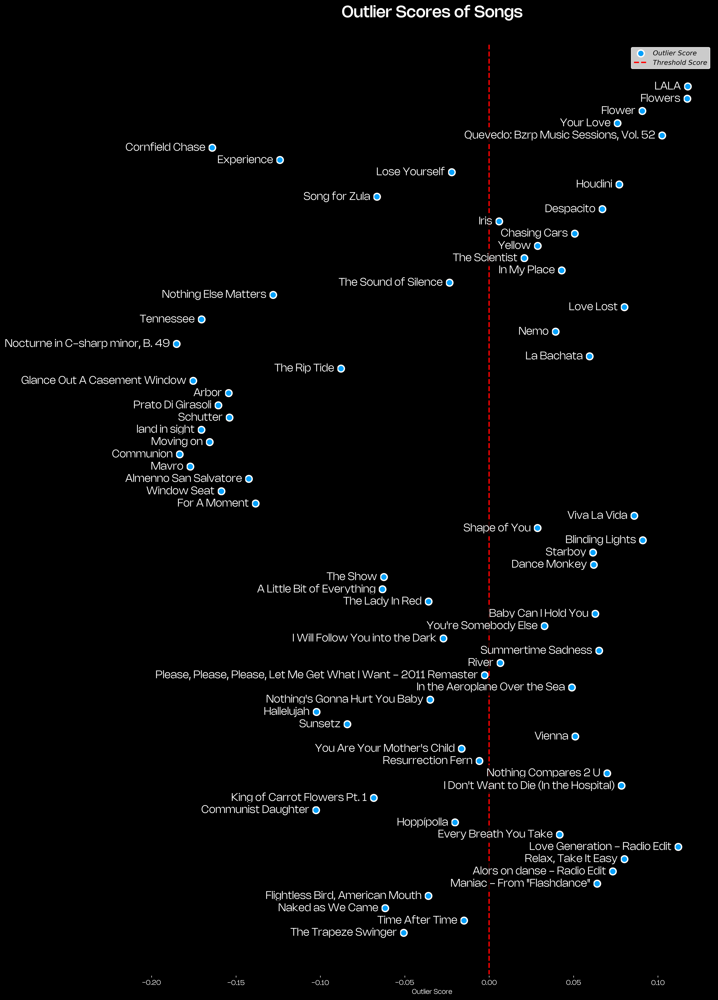

In this project, I set out to predict whether a song would be among the most streamed songs based on its various audio features. Utilizing data analytics and machine learning techniques, I developed a model capable of identifying songs with similar characteristics to the most streamed ones on Spotify. The project involved several steps, including data collection, preprocessing, exploratory data analysis (EDA), model training, and evaluation.
I needed a dataset which contained the most popular songs on Spotify as well as their audio features. My approach was first to obtain a dataset with Spotify's most popular songs (containing each song's streams) and, next, obtain the audio features of each of these songs through Spotif's API.
I used the dataset Most Streamed Spotify Songs 2024 recuperated from Kaggle. With this dataset I had my initial input; this dataset contained information such as Track, Album Name, Artist, Release Date and Spotify Streams.
Afterwards, I used the Spotify API to gather the audio features of each song in the dataset. This required authentication with Spotify's API and extracting relevant data.
import pandas as pd
import requests
import base64
import time
from requests.adapters import HTTPAdapter
from requests.packages.urllib3.util.retry import Retry
# Spotify API credentials
client_id = 'your_client_id'
client_secret = 'your_client_secret'
# Encode credentials
credentials = f"{client_id}:{client_secret}"
encoded_credentials = base64.b64encode(credentials.encode()).decode()
# Function to get Spotify access token
def get_access_token():
auth_url = "https://accounts.spotify.com/api/token"
headers = {
"Authorization": f"Basic {encoded_credentials}"
}
data = {
"grant_type": "client_credentials"
}
response = requests.post(auth_url, headers=headers, data=data)
response_data = response.json()
return response_data['access_token']
# Function to search for a track and get the track ID
def get_track_id(track_name, artist_name, access_token):
search_url = "https://api.spotify.com/v1/search"
headers = {
"Authorization": f"Bearer {access_token}"
}
params = {
"q": f"track:{track_name} artist:{artist_name}",
"type": "track",
"limit": 1
}
response = requests.get(search_url, headers=headers, params=params)
response_data = response.json()
tracks = response_data.get('tracks', {}).get('items', [])
if tracks:
return tracks[0]['id']
return None
# Function to get audio features for a track
def get_audio_features(track_id, access_token):
features_url = f"https://api.spotify.com/v1/audio-features/{track_id}"
headers = {
"Authorization": f"Bearer {access_token}"
}
response = requests.get(features_url, headers=headers)
return response.json()
# Set up a requests session with retry logic
session = requests.Session()
retries = Retry(total=5, backoff_factor=1, status_forcelist=[429, 500, 502, 503, 504])
session.mount('https://', HTTPAdapter(max_retries=retries))
# Load the dataset
file_path = 'file_path/Most Streamed Spotify Songs 2024.csv'
data = pd.read_csv(file_path, encoding='ISO-8859-1')
# Ensure all values in 'Track' and 'Artist' columns are strings
data['Track'] = data['Track'].astype(str)
data['Artist'] = data['Artist'].fillna('Unknown Artist').astype(str)
# Extract track names and artist names
tracks = data[['Track', 'Artist']]
# Get Spotify access token
access_token = get_access_token()
# Create lists to store audio features and tracks not found
audio_features_list = []
not_found_tracks = []
# Function to save progress
def save_progress(audio_features_list, not_found_tracks):
audio_features_df = pd.DataFrame(audio_features_list)
audio_features_df.to_csv('audio_features.csv', index=False)
not_found_tracks_df = pd.DataFrame(not_found_tracks, columns=['Track', 'Artist'])
not_found_tracks_df.to_csv('not_found_tracks.csv', index=False)
# Iterate over each track to get audio features
for index, row in tracks.iterrows():
track_name = row['Track']
artist_name = row['Artist']
# Handle encoding issues
track_name = track_name.encode('utf-8', 'ignore').decode('utf-8')
artist_name = artist_name.encode('utf-8', 'ignore').decode('utf-8')
try:
track_id = get_track_id(track_name, artist_name, access_token)
if track_id:
audio_features = get_audio_features(track_id, access_token)
audio_features['Track'] = track_name
audio_features['Artist'] = artist_name
audio_features_list.append(audio_features)
print(f"Found and added: {track_name} by {artist_name}")
else:
not_found_tracks.append((track_name, artist_name))
print(f"Track ID not found for {track_name} by {artist_name}")
time.sleep(0.5) # Sleep to avoid hitting rate limits
except requests.exceptions.RequestException as e:
print(f"Error retrieving data for {track_name} by {artist_name}: {e}")
not_found_tracks.append((track_name, artist_name))
# Periodically save progress every 10 iterations
if (index + 1) % 10 == 0:
save_progress(audio_features_list, not_found_tracks)
# Final save at the end
save_progress(audio_features_list, not_found_tracks)
# Print summary
print(f"\nTotal tracks processed: {len(tracks)}")
print(f"Tracks found and added: {len(audio_features_list)}")
print(f"Tracks not found: {len(not_found_tracks)}")
print("Audio features have been saved to audio_features.csv")
print("Tracks not found have been saved to not_found_tracks.csv")
# Load previously created Audio features Dataset
file_path = 'C:/Users/Victor Cardenas/Documents/dataset_projects/spotify_streaming/audio_features.csv'
audio_features = pd.read_csv(file_path, encoding='latin1')
# Load Spotify Most Streamed dataset
file_path = 'C:/Users/Victor Cardenas/Documents/dataset_projects/spotify_streaming/Most Streamed Spotify Songs 2024.csv'
spotify_data = pd.read_csv(file_path, encoding='latin1')
I performed an initial exploration of the dataset to understand its structure and to identify any potential issues. This included checking the distributions of each feature and identifying any missing or anomalous values.
I summarized the main characteristics of the data, noting data types, the presence of missing values, the distribution of each feature, and the relationships between different variables.
The following are the audio features used for this analysis and a brief explanation of them. Everything can be revised in the Spotify for Developers site:
A measure from 0.0 to 1.0 describing the musical positiveness conveyed by a track. Tracks with high valence sound more positive (e.g. happy, cheerful, euphoric), while tracks with low valence sound more negative (e.g. sad, depressed, angry).
Range: 0 - 1
Example: 0.428
The overall loudness of a track in decibels (dB). Loudness values are averaged across the entire track and are useful for comparing relative loudness of tracks. Loudness is the quality of a sound that is the primary psychological correlate of physical strength (amplitude). Values typically range between -60 and 0 db.
Example: -5.883
Danceability describes how suitable a track is for dancing based on a combination of musical elements including tempo, rhythm stability, beat strength, and overall regularity. A value of 0.0 is least danceable and 1.0 is most danceable.
Example: 0.585
Predicts whether a track contains no vocals. "Ooh" and "aah" sounds are treated as instrumental in this context. Rap or spoken word tracks are clearly "vocal". The closer the instrumentalness value is to 1.0, the greater likelihood the track contains no vocal content. Values above 0.5 are intended to represent instrumental tracks, but confidence is higher as the value approaches 1.0.
Example: 0.00686
This step involved handling unexpected values and ensuring the data was in the correct format for analysis and modeling. The following were the principal preprocessing aspects done.
I handled missing values by imputing them with appropriate statistics (e.g., mean for numeric features), corrected any errors found in the data (such as dealing with numeric features which were being treated as strings with commas), eliminated the columns which did not help with the analysis (e.g., TIDAL Popularity) and removed duplicates.
I normalized and scaled the data to ensure that all features contributed equally to the model. This involved standardizing the numeric features, data clustering and dimension reduction.
As mentioned, I merged both initial datasets; Audio Features and Spotify's Most Streamed Songs to generate a dataframe which contained the songs streams as well as their audio features in order to train the model.
Below, the corresponding code.
# Convert all columns to numeric, ignoring non-numeric
numeric_df = audio_features.select_dtypes(include=['float64', 'int64'])
# Drop the "TIDAL popularity" column within Spotify Dataset
spotify_data = spotify_data.drop(columns=['TIDAL Popularity'])
# Merge the datasets on the 'Track' column
merged_df = pd.merge(spotify_data, audio_features, on='Track', how='inner') # Use 'inner' to keep only common tracks, or 'outer' for all tracks
# Check for common tracks
common_tracks = spotify_data['Track'].isin(audio_features['Track'])
# Filter spotify_data to only include common tracks
spotify_data_common = spotify_data[common_tracks]
# Merge spotify_data_common with audio_features on 'Track'
merged_df = pd.merge(spotify_data_common, audio_features, on='Track', how='inner')
Before training the model, I conducted EDA to understand the distribution and relationships of the audio features. This helped in identifying any patterns or anomalies in the data.
I used various plots and charts to visualize the distributions of the features and their relationships with the target variable, Spotify Streams. This helped in understanding patterns and potential correlations.
I considered many variables would be strongly correlated. For example, acousticness with energy, and live with energy. Likewise, I thought danceablity would hold a high importance for a song to be popular when compared to other audio features' importances.
# Correlation matrix
correlation_matrix = numeric_df.corr()
# Plotting
import seaborn as sns
import matplotlib.pyplot as plt
plt.figure(figsize=(12, 8))
heatmap = sns.heatmap(correlation_matrix, annot=True, cmap=sns.color_palette("viridis", as_cmap=True), fmt='.2f', linewidths=0.5, linecolor='black')
plt.title('Correlation Matrix', color='white', pad=15) # Set title color to white
plt.gcf().set_facecolor('black') # Set background color of the entire figure to black
heatmap.set_facecolor('black') # Set background color of the heatmap to black
heatmap.tick_params(colors='white') # Set tick color to white
# plt.savefig('correlation_matrix.png', dpi=300, bbox_inches='tight', facecolor='black') # Save as PNG with black background
plt.show()
Most of the variables proved to share no real co-dependency, the sole clear direct dependency was evidently between energy and loudness. This lack of dependency between values meant I could use an algorithm which assumed independency between variables to train my model.
Afterwards, I needed to normalize the information to scale the data and finally cluster the information to have a better understanding of the different patterns the songs' audio features share.
from sklearn.preprocessing import StandardScaler
from sklearn.cluster import KMeans
# Normalize the data
scaler = StandardScaler()
scaled_data = scaler.fit_transform(numeric_df)
# Apply KMeans clustering
kmeans = KMeans(n_clusters=4, random_state=42)
numeric_df['Cluster'] = kmeans.fit_predict(scaled_data)
# Visualize the clusters
# sns.pairplot(numeric_df, hue='Cluster', palette='viridis')
# plt.show()
I proceeded with the PCA Graph.
from sklearn.decomposition import PCA
import matplotlib.font_manager as fm
# Apply PCA
pca = PCA(n_components=2)
pca_result = pca.fit_transform(scaled_data)
numeric_df['PCA1'] = pca_result[:, 0]
numeric_df['PCA2'] = pca_result[:, 1]
# Load the custom fonts
font_path_light = 'C:/Users/Victor Cardenas/Documents/PORTAFOLIO/public/fonts/Nohemi-Light.otf'
font_prop_light = fm.FontProperties(fname=font_path_light)
font_path_medium = 'C:/Users/Victor Cardenas/Documents/PORTAFOLIO/public/fonts/Nohemi-Medium.otf'
font_prop_medium = fm.FontProperties(fname=font_path_medium)
# Plot PCA
plt.figure(figsize=(10, 7))
# Create scatter plot
sns.scatterplot(x='PCA1', y='PCA2', hue='Cluster', data=numeric_df, palette='viridis')
# Customize plot background and text colors
plt.title('PCA of Spotify Songs', color='white', fontsize=18, pad=15, fontproperties=font_prop_medium)
plt.gcf().set_facecolor('black') # Set background color of the entire figure to black
# Customize axis background and text colors
ax = plt.gca() # Get the current axis
ax.set_facecolor('black') # Set the background color of the axis to black
ax.tick_params(colors='white') # Set the tick color to white
ax.spines['top'].set_color('white')
ax.spines['right'].set_color('white')
ax.spines['bottom'].set_color('white')
ax.spines['left'].set_color('white')
# Set labels color
plt.xlabel('PCA1', color='white', fontproperties=font_prop_light)
plt.ylabel('PCA2', color='white', fontproperties=font_prop_light)
# Customize legend
legend = ax.legend()
frame = legend.get_frame()
frame.set_facecolor('black')
frame.set_edgecolor('white')
plt.setp(legend.get_texts(), color='white')
# plt.savefig('pca_spotifysongs.png', dpi=300, bbox_inches='tight', facecolor='black') # Save as PNG with black background
plt.show() I, now, proceed to obtain feature importances, with this, I will be able to understand what is the feature which takes the most relevance to position a song between one of the most streamed ones.
import pandas as pd
import numpy as np
import matplotlib.pyplot as plt
import matplotlib.font_manager as fm
from sklearn.ensemble import RandomForestRegressor
from sklearn.impute import SimpleImputer
from sklearn.preprocessing import FunctionTransformer
# Merge numeric_df with merged_df on 'valence' and 'tempo'
final_df = pd.merge(numeric_df, merged_df[['valence', 'tempo', 'Spotify Streams']], on=['valence', 'tempo'], how='inner')
# final_df' is already defined with 'Spotify Streams' and 'Cluster' columns dropped from features
features = final_df.drop(['Spotify Streams', 'Cluster'], axis=1)
# Check for NaN values in features
nan_columns = features.columns[features.isna().any()].tolist()
print("Columns with NaN values in features:", nan_columns)
# Impute NaN values with mean
imputer = SimpleImputer(strategy='mean')
features_imputed = imputer.fit_transform(features)
# Check for NaN values after imputation
nan_columns_imputed = np.isnan(features_imputed).any()
print("Columns with NaN values in features_imputed:", nan_columns_imputed)
# Preprocess target to remove commas and convert to numeric
def preprocess_target(target):
return target.str.replace(',', '').astype(float)
target = final_df['Spotify Streams']
target_numeric = preprocess_target(target)
# Check for NaN values in target_numeric
nan_target = target_numeric.isna().sum()
print(f"Number of NaN values in target: {nan_target}")
# Handle NaN values in target_numeric
target_imputer = SimpleImputer(strategy='mean')
target_imputed = target_imputer.fit_transform(target_numeric.values.reshape(-1, 1))
# Train model
model = RandomForestRegressor()
try:
model.fit(features_imputed, target_imputed.ravel()) # ravel to convert 2D array to 1D
importances = model.feature_importances_
feature_importance = pd.Series(importances, index=features.columns).sort_values(ascending=False)
# Load the custom fonts
font_path_light = 'C:/Users/Victor Cardenas/Documents/PORTAFOLIO/public/fonts/Nohemi-Light.otf'
font_prop_light = fm.FontProperties(fname=font_path_light)
font_path_medium = 'C:/Users/Victor Cardenas/Documents/PORTAFOLIO/public/fonts/Nohemi-Medium.otf'
font_prop_medium = fm.FontProperties(fname=font_path_medium, size=16)
# Set the color palette for the bars
color_palette = sns.color_palette("icefire", as_cmap=True)
# Plot
plt.figure(figsize=(10, 6))
plt.title('Feature Importance', color='white', pad=15, fontproperties=font_prop_medium)
# Set the plot background color
plt.gcf().set_facecolor('black')
# Customize the plot with the color palette
ax = feature_importance.plot(kind='bar', color=color_palette(np.linspace(0, 1, len(feature_importance))), edgecolor = "white")
# Set labels with custom font and color
plt.ylabel('Importance', color='white', fontproperties=font_prop_light, fontsize=12)
plt.xlabel('Features', color='white', fontproperties=font_prop_light, fontsize=12)
# Customize the tick parameters for x and y axis
plt.xticks(color='white', fontproperties=font_prop_light)
plt.yticks(color='white', fontproperties=font_prop_light)
# Customize the axes background color
ax.set_facecolor('black')
ax.spines['bottom'].set_color('white')
ax.spines['left'].set_color('white')
ax.spines['top'].set_color('white')
ax.spines['right'].set_color('white')
ax.yaxis.label.set_color('white')
ax.xaxis.label.set_color('white')
ax.tick_params(axis='x', colors='white')
ax.tick_params(axis='y', colors='white')
# plt.savefig('feature_importance.png', dpi=300, bbox_inches='tight', facecolor='black') # Save as PNG with black background
plt.show()
except ValueError as e:
print(f"Error during model fitting: {e}")
The graph shows how 'valence' is the most important feature when understanding the similarities between most streamed songs. This is understandable, as the vast majority of the song showcase a positive valence, closer too a 'positive' or 'euphoric' state. One could understand why people listening to music would usually rather hearing something which makes them feel this way.
I selected the most relevant features from the dataset that could potentially influence the popularity of the tracks.
import pandas as pd
from sklearn.ensemble import IsolationForest
import joblib
# Extract features
features = ['danceability', 'energy', 'key', 'loudness', 'mode', 'speechiness',
'acousticness', 'instrumentalness', 'liveness', 'valence', 'tempo',
'duration_ms']
Considering that what I wanted was to identify songs which potentially would be popular among listeners, what I needed was to detect which audio features were significantly different from those known to be popular, making them outliers. For this, I decided to use Isolation Forest.
X_train = final_df[features]
# Train the model
model = IsolationForest(contamination=0.1, random_state=42)
model.fit(X_train)
# Save the model
joblib.dump(model, 'most_streamed_model_1.pkl')
print("Model trained and saved.")
As previously mentioned, the best way of testing the performance was to check if the code actually labeled one of the Most Streamed songs as actually being potentially Most Streamed, and the model performed very good doing this. Labeling 100% of these songs correctly. For the purpose of predicting, I adde some other songs, most of them, I thought they had no potential on being most streamed (I chose many 'peaceful piano' instrumental songs, for example, and some other slow and sort of sad songs on my opinion; all this, trying to contrast with the overall happy and voicy vibe patter detected on the most streamed songs). Here, you can observe a graph of the results for each song in the model.The red ones are songs which for part of the Most Streamed dataset I used so they were supposed to be labeles as 'Most Streamed', the rest were just new songs which I fed to the model to see what would be its prediction.
In this project, I analyzed Spotify track data to uncover key factors influencing track popularity and identify anomalies within the dataset. By using a Random Forest Regressor, I highlighted the importance of features such as danceability, energy, and loudness in predicting Spotify streams. Additionally, I used an Isolation Forest model to efficiently detect outlier tracks.
For future improvements, I think it could help doing some further feature engineering in order to identify more patterns.